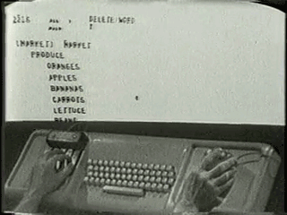
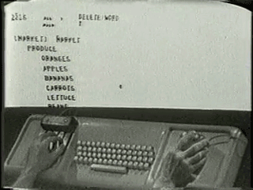

I would like to say thank you to all of you at this table.
it is because of you that this constant shifting was even allowed to happen and I really have learned so much from you all

part of me is inside of an entity like a cloud which is porous and but also full like a student and sometimes it rains
ü¶†
üçÉ
hand coding round robin


 



the rest of the class will be a kind of meditation on the last three weeks. think about something you would like to share as code societies comes to a close. it can be in the form of a question or a phrase. it can be something you've been thinking about for a while or something that you're thinking about today.
p tag
create the opening and closing tag, place your question or phrase inside
another p tag (inside the div tag)
respond in a few sentences to the question or phrase
div tags and classes and ids
add an id to the any tag on the page, add a class any tag on the page
css
notice the name of the class on one of the html tags, scroll up to the <style> section and write your first css style for that class name
ul and li tags
create a list of things that the two writings on the page are making you think of, things to remember or look up or things that you are thinking of in the moment
p tag
respond to everything on the page so far. what might the subtext or hidden meaning be? feel free to add a css id or existing class and some styles when you're done
img tag
what image might go here? surf the net! copy and paste the url of the image.
alt text
describe this image with the most descriptive language you can think of. think about screen readers and the importance of what the image is actually trying to communicate!
links! the a tag
if someone could only go to one website from this page where would they go?
h1 tag
what is the title of this page?
h2 tag
what is the sub title? how you would you describe this page in a sentence?
css practice!
find an unstyled element or an element that you would like to add style to!
freestyle html!
add an html element we havent used yet, practice writing something again! fill in with whatever you want!
reflection (on our own computers)
use html and css to create a new element, write a short reflection of your understanding of this page, how does it make you feel? what might be missing? how does it feel to be back on your own computer?
save your file and send it to me in slack! plz!
i will put all the pages together into a single webpage tomorrow and it will exist as a kind of digital zine :-)